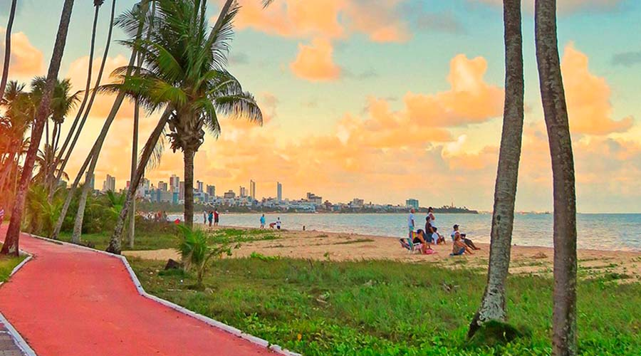
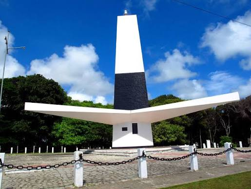

Praias
Veja algumas das praias mais conhecidas de João Pessoa.
Ver praiasConheça algumas das praias, paisagens e atrações que fazem João Pessoa ser um dos destinos mais encantadores do Nordeste.
Começar a conhecerJoão Pessoa reúne praias urbanas, natureza, história e cultura. Neste pequeno site, apresentamos algumas opções para quem deseja conhecer melhor a cidade.

Veja algumas das praias mais conhecidas de João Pessoa.
Ver praias
Conheça lugares históricos e turísticos da capital paraibana.
Ver pontos turísticos